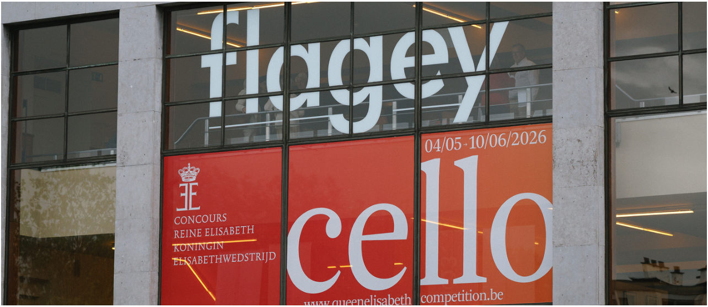
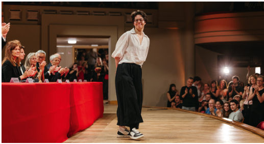
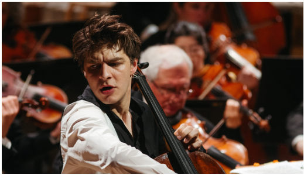
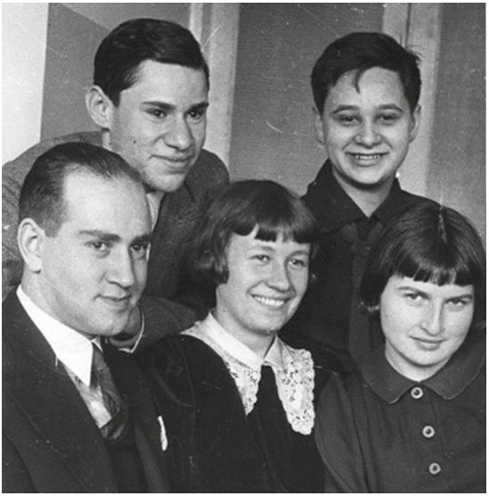
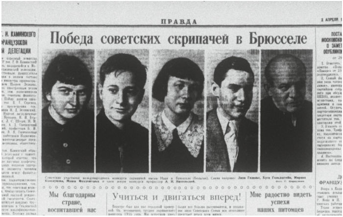
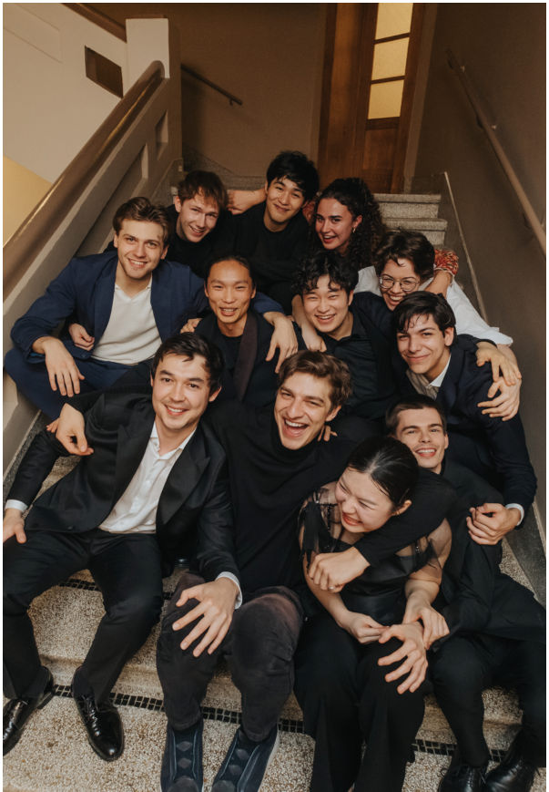
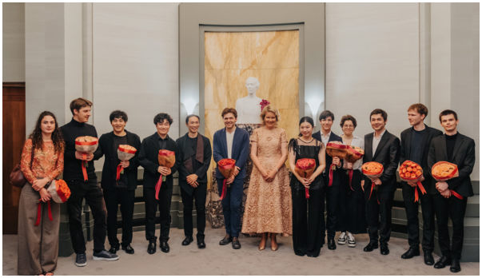
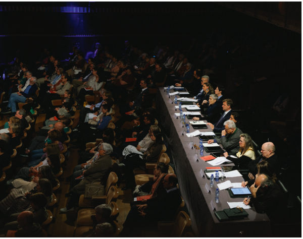

CELLO Событие · с. 23–25
Конкурс королевы Елизаветы 2026
Бельгия, Брюссель, 4 мая – 10 июня 2026 года. Впервые в финале виолончелисты из России



Вмае 2026 года Брюссель вновь стал эпицентром мирового академического музыкального искусства. С 4 мая по 10 июня лучшие молодые виолончелисты мира выступали на знаковых площадках культурного центра Flagey и Центра изящных искусств BOZAR, стремясь завоевать престижное звание лауреата и получить главный приз – возможность четыре года играть на легендарной виолончели Франческо Гофриллера 1733 года, принадлежавшей самому Пабло Казальсу! Такой чести удостоился итальянец Этторе Пагано.
Впервые в финал конкурса прошли виолончелисты из России. От лица редакции журнала поздравляем Марию Зайцеву и Ивана Сендецкого!


Призовые места распределились следующим образом:
1 премия – Этторе Пагано (Италия) 2 премия – Тэ Ён Ким (Корея) 3 премия – Лиланд Ко (США, Канада) 4 премия – Альваро Лосано Камес (Испания) 5 премия – Йо Китамура (Япония) 6 премия – Мария Зайцева (Россия)
Лауреаты конкурса:
Иван Сендецкий (Россия), Эндрю Ильхун Бьюн (Канада), Клара Дитлин (Франция), Лионель Мартин (Германия), Кшиштоф Михальски (Польша), Дильшод Нарзиллаев (Узбекистан).
Все финалисты стали участниками международной серии концертов, организованных фондом конкурса, с выступлениями в Брюсселе и других музыкальных столицах.
Призовой фонд конкурса предусматривает денежные награды для всех финалистов: € 25 000 (1 премия – премия королевы Матильды), € 20 000 (2 премия), € 17 000 (3 премия), € 12 500 (4 премия), € 10 000 (5 премия), € 8 000 (6 премия), € 4 000 – остальные финалисты.
История
Конкурс был основан в 1937 году при всесторонней поддержке королевы Бельгии Елизаветы и изначально был назван в честь Эжена Изаи. Первый конкурс проводился среди скрипачей и стал триумфальным для советской исполнительской школы. Пять мест из шести достались исполнителям из СССР: Давид Ойстрах (1 премия), Елизавета Гилельс (3 премия), Борис Гольдштейн (4 премия), Марина Козолупова (5 премия), Михаил Фихтенгольц (6 премия). В 1938 году состоялись состязания среди пианистов, на которых победил Эмиль Гилельс, а третье место занял Яков Флиер. В следующем году должны были соревноваться дирижёры, но планам помешала Вторая мировая война. И только в 1951 году конкурс возобновился уже под именем королевы Елизаветы. Он стал проводиться по трём номинациям (скрипка, фортепиано, композиция). Тогда среди скрипачей первым стал Леонид Коган, а вторым Михаил Вайман. В 1988 году была добавлена четвёртая номинация – академический вокал. Первый конкурс среди виолончелистов состоялся только в 2017 году, тогда победителем стал француз Виктор Жюльен-Лаферьер. В 2022-м первое место занял Чхве Хаён из Китая.
Участники
Отборочный этап отличался исключительной конкуренцией. Из сотен заявок международное жюри отобрало 66 музыкантов для участия в первом публичном туре. Двое исполнителей не смогли участвовать. Согласно возрастному регламенту, к состязанию допускались исполнители не моложе 18 и не старше 30 лет на 31 декабря 2025 года.
Россию представили четыре замечательных исполнителя: Мария Зайцева, Иван Сендецкий, Иван Сканави, Катарина Мельдре.



После выступлений первого тура в полуфинал были допущены 24 участника, а в финал лишь 12.
Программа
Программа конкурса королевы Елизаветы отличается от привычных списков конкурсных произведений и включает в себя редко исполняемые опусы и даже премьеры. Художественная концепция выстроена так, чтобы всесторонне продемонстрировать музыкальную сторону и техническое мастерство участников.
Отборочный тур (по видеозаписям) включал один из Шести этюдов Ф. Серве, Концертные вариации Ф. Мендельсона, Сонату Э. Изаи для виолончели соло и сочинение по выбору, созданное после 1950 года.
В программу первого тура входили: Соната Л. Боккерини в сопровождении второй виолончели, одна из следующих миниатюр: «Медитация» Н. Рославца, «Баллада» Й. Сука или Три пьесы Н. Буланже, – а также обязательная для всех исполнителей «Колыбельная» К. Саариахо.
Полуфинал состоял из двух частей. В первой участники выступили с Королевским камерным оркестром Валлонии под управлением В. Мардироссяна, исполнив концерты на выбор: А. Крафта, М. Гайдна, Л. Хофмана. Для второй части полуфинала участники должны были представить две камерные программы, и только за сутки жюри определяло, какую из них участнику следует исполнить. Обязательным для всех сочинением была пьеса для виолончели и фортепиано «Caffeine» Г. Нобена.
В финале участники сыграли Концерт с оркестром по выбору и ещё одно специально написанное сочинение – «Four Odes to the Tidingsof Flowers» («Четыре оды цветам») композитора Фанг Ман в сопровождении Бельгийского национального оркестра под управлением Э. Хермуса.
Жюри конкурса
На выступлениях присутствовала королевская семья: король Филипп и королева Матильда. А оценивало участников международное жюри во главе с Жилем Ледуром (руководителем культурного центра Flagey). Состав жюри конкурса варьировался в зависимости от тура, чтобы обеспечить максимальную объективность. В него входили: Натали Клейн, Рул Дилтинс, Валентин Эрбен, Мари Халлинк, Ансси Карттунен, Цзянь Ван, Шэрон Робинсон, Офелия Гайяр, Анна Гастинель, Бенжамин Глорие, Ян Фоглер, Даниэль Мюллер-Шотт, Грегор Хорш и Соня Видер-Атертон.